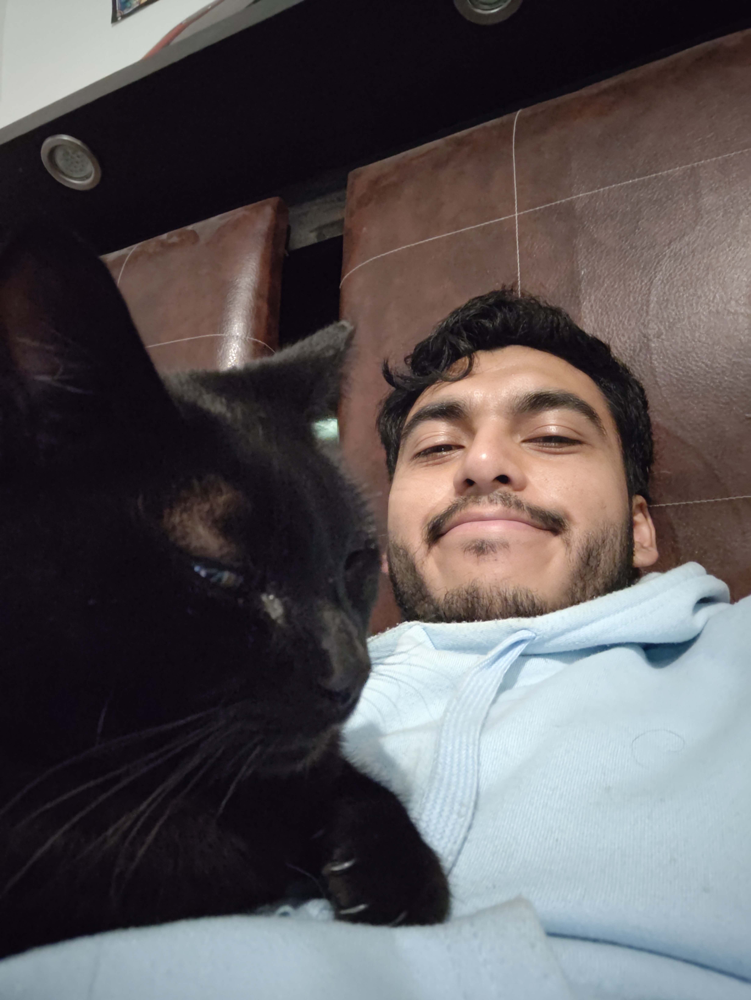

About me
Hello there.
My name is Alan, I am currently a last year phD student from Mexico doing research in the field of computation population genetics.
Evolution and defining life (in the most general manner possible) is one of my all time favourite things to ponder and theorise about.
I consider myself a mystic and I am constantly battling and trying to reconcile my affinities for the sense that there is something else out there with current descriptions of reality. It turns out this a rare profile to have in academic sciencie which is why I need an outlet like this to share my less ... ideas which I think are equally or even more important than the scientific ones.
I despise complexity and think hard to make things simple.
Is this thing on?
Enjoy this picture of myself with my cat Camilo
These are my thoughts
Due to talk about: Naza trydactils, Defining life, complexity, limits of population genetics, remystification of reality, llm appreciation post, Why we need modern versions of T. McKenna and A. Watts.
A general model of experience and agents
An imagination of true-randomness
This is my art
Geometric art made with Geogebra, collages made with Dingboard.
Collage
On Instagram as https://www.instagram.com/rumio.art/
Academic publications
Izarraras-Gomez, Alan, and Diego Ortega-Del Vecchyo. 2023. “Ancient DNA Uncovers Past Migrations in California.” Nature 624 (7990): 43–44. https://doi.org/10.1038/d41586-023-03503-7
Villa-Islas, Viridiana, Alan Izarraras-Gomez, Maximilian Larena, Elizabeth Mejía Perez Campos, Marcela Sandoval-Velasco, Juan Esteban Rodríguez-Rodríguez, Miriam Bravo-Lopez, et al. 2023. “Demographic History and Genetic Structure in Pre-Hispanic Central Mexico.” Science 380 (6645): eadd6142. DOI: 10.1126/science.add614
Sohail, Mashaal, Alan Izarraras-Gomez, and Diego Ortega-Del Vecchyo. 2021. “Populations, Traits, and Their Spatial Structure in Humans.” Genome Biology and Evolution 13 (12): evab272. https://doi.org/10.1093/gbe/evab272
Contact information
alanizarraras3@gmail.com
academic X @AlanIzarr
pseudo anon X @TeoriaNeutral